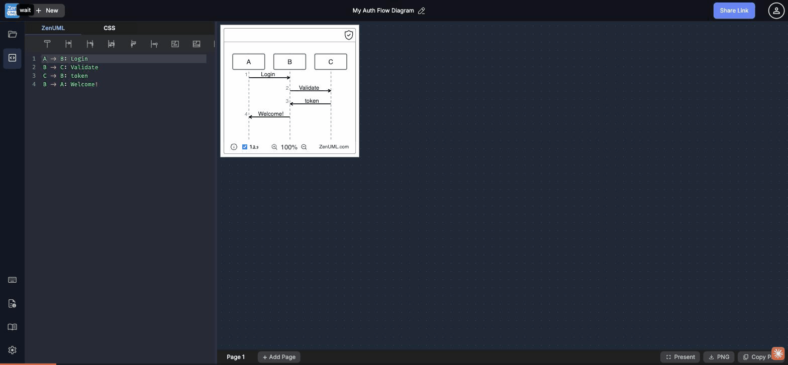

Session Recording
Testing PNG export, Copy PNG clipboard, right-click canvas, Cmd+S, and SVG availability as anonymous user.

Export Action Matrix (Anonymous User)
| Action | UI Location | Result | Feedback shown |
| Click "PNG" button |
Bottom-right bar |
Auth modal (generic login) |
No export context, no pricing info |
| Click "Copy PNG" button |
Bottom-right bar |
Auth modal (same generic login) |
Identical modal, no differentiation |
| Right-click diagram canvas |
Canvas area |
Browser native context menu |
No app context menu, no export options |
| Cmd+S (keyboard shortcut) |
Editor focused |
Silent — no response |
No toast, no modal, no feedback |
| Export as SVG |
— |
Option does not exist |
Not available anywhere in the app |
Identified Gaps
Clicking "Export as PNG" or "Copy PNG to Clipboard" (both visible in the bottom bar) immediately shows the "Welcome to ZenUML.com" login modal. The modal provides zero context:
- No mention of why login is required ("Export requires an account" is never stated)
- No pricing indication — is this free with account, or paid? The user cannot tell
- Modal copy: "Join a community of 50,000+ Developers" — a marketing tagline, not a feature explanation
- No lock icon, tooltip, or badge on the buttons before clicking to signal they are gated
- Both buttons show identical modals — Copy PNG (free clipboard copy) should behave differently from PNG download (potentially paid)
- The app offers no preview of what happens after login — no "Sign in to download your diagram" messaging
Auth modal observed after clicking either export button
Modal title: "Welcome to ZenUML.com"
Options: Login with Github / Google / Facebook
Subtext: "Join a community of 50,000+ Developers"
Missing: Any mention of export, pricing, or what feature is being unlocked
Nielsen #1: Visibility of System Status
Nielsen #6: Recognition over Recall
Growth: Explain the value before the gate
A new user can open the app, build a complete sequence diagram, and have no way to export or share it without creating an account. There is no free export tier whatsoever:
- PNG download → requires login
- Copy PNG → requires login
- SVG export → does not exist
- Right-click diagram → no "Save image as" (canvas renders as HTML/CSS, not an <img>)
- Cmd+S → silent (no local save, no download)
- Only escape: manually copy the ZenUML source text from the editor — not discoverable
This creates a high-friction drop-off point for the most natural first action after building a diagram. Industry standard is at least one free export format (Mermaid Live → SVG free, PlantUML → PNG free, Excalidraw → PNG/SVG free).
Competitor comparison — anonymous export availability
| Tool | Free anonymous export |
|---|
| ZenUML web-sequence | None — all gated behind login |
| Mermaid Live Editor | SVG, PNG free, no account needed |
| PlantUML online | PNG, SVG, ASCII free, no account |
| Excalidraw | PNG, SVG free, no account needed |
| diagrams.net (draw.io) | PNG, SVG, PDF free, no account |
Nielsen #3: User Control & Freedom
Freemium: Value before the gate
Conversion funnel: Export is the aha-moment
The app offers only two export actions (PNG download, Copy PNG), both locked. SVG export is completely absent:
- SVG is the standard vector format for diagrams — infinitely scalable, editable in Illustrator/Inkscape, ideal for documentation
- The diagram renders as inline SVG in the browser — the format is already there; it just isn't exposed
- No "Copy SVG" option, no "Download SVG" option, no way to access the raw SVG source
- PNG-only export degrades for large displays, HiDPI screens, and print use cases
- All major diagram tools offer SVG as a first-class free export option
Feature completeness
Print/documentation use cases
Competitive parity
The keyboard shortcuts panel lists Ctrl/⌘ + S as "Save current creations". For an anonymous user, pressing Cmd+S with editor focused produces absolutely no response:
- No toast notification
- No auth modal (unlike the export buttons which at least explain you need to log in)
- No local storage save
- No visual state change anywhere on screen
- The shortcut appears in the keyboard help as a valid action — the discrepancy with actual behavior (silent no-op) is a direct Nielsen #1 violation
The export buttons at least respond with a modal. Cmd+S is worse — it silently does nothing, leaving users to wonder if it worked, failed, or simply isn't implemented.
Nielsen #1: Visibility of System Status
Nielsen #5: Error Prevention
Keyboard shortcut contract
Right-clicking the rendered diagram canvas shows only the browser's native context menu (with options like "Inspect", "Save page as", etc.). No app-level context menu appears:
- Expected options: "Copy image", "Save image as PNG", "Zoom in/out", "Fit to screen"
- The canvas renders as HTML+CSS (not a standard
<img>), so browser "Save image" doesn't capture it correctly
- A custom right-click menu is a common pattern in diagramming tools (Mermaid, Excalidraw, draw.io all implement this)
- This is a discoverability issue — power users expect context menus as a shortcut surface
Nielsen #6: Recognition over Recall
Discoverability
Power-user affordances